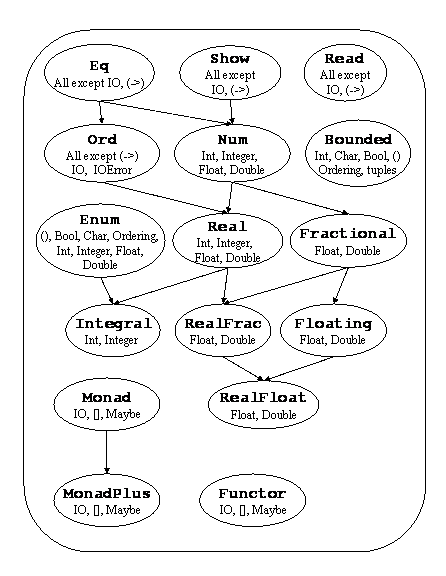

The Haskell 98 Report
top | back | next | contents | function index
Haskell のプレリュードは、暗黙のうちにすべての Haskell のプログラムに インポートされる定義ずみのクラス、型および関数を含んでいる。この節で は、プレリュード中に見い出せるこのような型およびクラスについて解説す る。ほとんどの関数はここでは詳しく解説はしない。 8 章に与えられてい る定義をから用意に理解できるからである。そのほか、配列、複素数および 有理数のような定義ずみの型は Part II で定義されている。
これらの型は Haskell プレリュードによって定義されている。数値型につい ては 6.4 節で解説する。必要ならその 型の Haskell での定義を与えている。 いくつかの定義は構文的には正しくないが、その型の本質的な意味は誠実に あらわしている。
data Bool = False | True deriving
(Read, Show, Eq, Ord, Enum, Bounded)
真理値型 Bool は列挙型のひとつである。基本的な真理値関数は、
&& (and)、|| (or)、および not
である。名前 otherwise はガード式を読みやすくするもので
True と定義されている。
文字型 Char は列挙型のひとつで、Unicode 文字 [11] を表す。文字に対する字句構文 は 2.6 節で定義されており、文 字リテラルはデータ型 Char の無引数構成子である。型 Char はクラス Read、Show、Eq、 Ord、Enum および Bounded のインスタンスで ある。有界列挙型の上の標準関数 toEum および fromEnum は文字の Int 型からあるいは Int 型への写像である。
ASCII の制御文字はそれぞれ文字リテラルとしていくつかの表現を持つこ とに注意せよ。数値エスケープ、ASCII ニーモニックエスケープおよび \^X 記法がある。さらに、次のような表現も同等のもので ある。\a と \BEL、\b と \BS、 \f と \FF、\r と \CR、\t と \HT、\v と \VT そして \n と \LF。
文字列 は文字のリストである。
type String = [Char]
文字列は 2.6 節で解説されて いる字句構文を用いて省略形にすることができる。たとえば、 "A string" は
['A',' ','s','t','r','i','n','g']
の省略形である。
data [a] = [] | a : [a] deriving (Eq, Ord)
リストは、二つの構成子をもつ代数的データ型であるが、3.7 節で述べたように特別な構文をもつ。最初
の構成子は空リストで、`[]' (「ニル」)と書く。二つ目の構成子
は、`:' (「コンス」)と書く。モジュール PreludeList
(8.1 節を見よ) は多く
の標準リスト関数を定義している。数列、リストの内包表記の 2 つの特別な
リストに対する便利な構文については、3.10 節および 3.11 節にそれぞれ解説してあ
る。リストは Read、Show、Eq、Ord、
Monad、Functor および MonadPlus クラスのイ
ンスタンスである。
タプルは特別な構文をもつ代数的データ型であり、これは 3.8 節で解説してある。それぞれのタプル型 は単一の構成子をもつ。すべてのタプルは Eq、Ord、 Bounded、Read および Show のインスタンスで ある(もちろん、すべての構成要素がそれらのインスタンスであることが条件 である)。
タプルのサイズには上限はない。しかしながら、いくつかの Haskell の実装 ではタプルのサイズに制限を設け、大きいタプルのインスタンスを制限する こともある。しかし、すべての Haskell の実装は 15 までのタプルサイズを サポートしなければならない。そして、それらは Eq、 Ord、Bounded、Read および Show の インスタンスでなければならない。プレリュードとライブラリではサイズが 7 までのタプルに対して zip などのタプル関数を定義している。
あるタプルに対応する構成子はコンマを囲む式を省略して書く。したがって、 (x,y) と (,) x y は同じ値を生成する。同じことが、タ プルの型構成子にもいえるので、(Int,Bool,Int) と (,,) Int Bool Int は同じ型をあらわしている。
以下の関数、fst、snd、curry および uncurry は対(2 タプル)についての関数として定義される。さらに 大きなタプルについては同様の関数は定義済ではない。
data () = () deriving (Eq, Ord, Bounded, Enum, Read, Show)
ユニットデータ型 () は非-_|_ の要素、すなわち、無引数
構成子 () を一つだけもつ。
3.9 節もあわせて見よ。
関数は抽象型のひとつで、関数の値を直接生成する構成子はない。以下の単 純な関数、id、const、(.)、flip、 ($) および until はプレリュード内にあるものである。
IO 型は外界とのインタラクション操作(アクション)に対するタグ として働く。IO 型は抽象型であり、構成子はユーザからは見えな い。IO は Monad および Functor クラスのイ ンスタンスである。7 章で I/O 操作について 解説する。
IOError は I/O 操作によって発生してエラーを表現する抽象型で、 Show および Eq のインスタンスである。この型の値は種々 の I/O 関数により構成される。このレポートではこれ以上はふれない。プレ リュードは、いくつかの I/O 関数 (8.3 節で定義されている) があり、Part II にはさらに多くの I/O 関数がある。
data Maybe a = Nothing | Just a deriving (Eq, Ord, Read, Show)
data Either a b = Left a | Right b deriving (Eq, Ord, Read, Show)
data Ordering = LT | EQ | GT deriving
(Eq, Ord, Bounded, Enum, Read, Show)
Maybe 型は Functor、Monad および
MonadPlus のインスタンスである。Ordering 型は
Ord クラスの compare で使われる。関数 maybe
および either はプレリュードにある。
Haskell における関数適用は非正格である。すなわち、関数引数は必要なと
きにのみ評価される。ときには値の評価を seq 関数を用いて強制
したい場合がある。
seq :: a -> b -> b
関数 seq は以下の等式で定義される。
| seq _|_b = _|_ |
| seq a b = b, if a /=_|_ |
seq は通常、不必要な遅延評価を回避してパフォーマンスを向上さ せために導入する。正格データ型 (4.2.1 節を見よ)は $! という演算子をつかって定義される。しかしながら、これは重大な意味上の 帰結をもたらす。それは、全ての型に使用可能であるからだ。結果として、_ |_ は \x -> _|_ と同じではなくなる。seq はこれを区別するために用いら れるからである。同様の理由で、seq の存在は、Haskell の パラメトリシティを弱める。
演算子 $! は正格(call-by-value)適用であり、seq を用
いて定義される。プレリュードでは遅延適用の $ も定義している。
infixr 0 $, $!
($), ($!) :: (a -> b) -> a -> b
f $ x = f x
f $! x = x `seq` f x
遅延適用演算子 $ は冗長に見えるかもしれない。それは、通常の
適用 (f x) は (f $ x) と同じ意味だからである。しか
しながら、$ は右結合性と低い優先順位をもつので、場合によって
は括弧を省略することができる。たとえば、
f $ g $ h x = f (g (h x))
これは map ($ 0) xs あるいは zipWith ($) fs xs など
のような高階関数を使う場面でも有用である。
図 6.1 はプレリュードで定義 されている Haskell のクラスとその型のインスタンスの階層を示している。
|

Figure 6.1Standard Haskell Classes |
デフォルトのクラスメソッド宣言 (4.3 節)は標準のクラスのなかの多くの メソッドに対して提供されている。 8 章のそれぞれの宣言に 付いているコメントはデフォルト宣言のものとともにすべてのクラスメソッ ド対する定義を提供するメソッド定義の最小限の集合であることを示してい る。もし、このようなコメントがない場合には、インスタンスを完全に指定 するために、全てのクラスメソッドが与えられていなければならない。
class Eq a where
(==), (/=) :: a -> a -> Bool
x /= y = not (x == y)
x == y = not (x /= y)
Eq クラスは等価性 (==) および 非等価性 (/=) メソッ
ドを提供する。すべての基本データ型は関数の型および IO 型をの
ぞき、このクラスのインスタンスである。Eq のインスタンスはそ
の構成要素も Eq のインスタンスである場合のすべてユーザ定義デー
タ型に対して導出することができる。
この宣言は /= と == の両方に対して デフォルトのメソッドを与えており、それぞれがもう一方を使って定義 されている。Eq のインスタンス宣言で、== も /= もともに定義しないと、両方がループしてしまう。一方だけ、 定義すれば、もう一方は、デフォルトメソッドのなかで、いま定義を与えた 方をつかいます。もし両方の定義が与えられれば、デフォルトのメソッドは どちらも使われません。
class (Eq a) => Ord a where
compare :: a -> a -> Ordering
(<), (<=), (>=), (>) :: a -> a -> Bool
max, min :: a -> a -> a
compare x y | x == y = EQ
| x <= y = LT
| otherwise = GT
x <= y = compare x y /= GT
x < y = compare x y == LT
x >= y = compare x y /= LT
x > y = compare x y == GT
-- Note that (min x y, max x y) = (x,y) or (y,x)
max x y | x <= y = y
| otherwise = x
min x y | x <= y = x
| otherwise = y
Ord クラスは全順序データ型に対して用いられる。関数、
IO および IOError をのぞくすべての基本データ型は
このクラスのインスタンスである。Ord のインスタンスはその
構成要素も Ord のインスタンスであるすべてのユーザ定義の
データ型に対して導出できる。データ宣言中での構成子の宣言順が導出され
た Ord インスタンスの順序を決める。Ordering
データ型はふたつのオブジェクトの正確な順序付けを決定する単一の比較を
可能にする。
デフォルト宣言により、ユーザが、Ord インスタンスを作るには その型専用の compare 関数を定義するか、あるいは == および <= 関数を定義するかどちらかでよい。
type ReadS a = String -> [(a,String)]
type ShowS = String -> String
class Read a where
readsPrec :: Int -> ReadS a
readList :: ReadS [a]
-- ... default decl for readList given in Prelude
class Show a where
showsPrec :: Int -> a -> ShowS
show :: a -> String
showList :: [a] -> ShowS
showsPrec _ x s = show x ++ s
show x = showsPrec 0 x ""
-- ... default decl for showList given in Prelude
Read および Show クラスは文字列との間で値を変換する
ために用いる。showsPrec および readsPrec への Int
引数は、括弧にいれるコンテキスト
(10.4 節を見よ)での
この演算子の優先順位である。
showsPrec および showList は StringからStringへの関 数を返す。これは、関数合成を用いて定数時間の連結を可能にするものであ る。特殊化された形態のひとつ show が用意されており、これは優 先順位文脈はゼロを用いており、通常の String を返す。 showList メソッドはプログラマが値のリストを表示する方法を特殊化できる ように用意されている。これは、特に Char 型に対して有用で、 String 型 の値を角括弧ではなく二重引用符で囲って表示する。
導出された Read および Show のインスタンスは構成子が宣言されたときの スタイルを繰り返す。中置構成子およびフィールド名は、入力および出力の 際に用いられる。showPrec で生成された文字列は通常、 readsPrec で読み 取り可能となっている。
関数および IO の型をのぞき、Prelude の型はすべて Show および Read の インスタンスである。(もし、のぞめば、プログラマはインスタンス宣言を用 意することで、関数やIO の型を実体のない Show のインスタンスとすること ができる。)
利便のために、プレリュードでは以下の補助関数が用意されている。
reads :: (Read a) => ReadS a
reads = readsPrec 0
shows :: (Show a) => a -> ShowS
shows = showsPrec 0
read :: (Read a) => String -> a
read s = case [x | (x,t) <- reads s, ("","") <- lex t] of
[x] -> x
[] -> error "PreludeText.read: no parse"
_ -> error "PreludeText.read: ambiguous parse"
shows および reads はデフォルトの優先順位 0
を用いる。read 関数は文字列から入力を読み、入力処理でこれを
完全に消費しなければならない。
関数 lex :: ReadS String は read が 使うが、これはプレリュードの一部である。これは、ひとつの字句を入力か ら読み、最初につづく空白を捨て、その字句を構成する文字群を返す。入力 文字列が空白しか含んでいなければ、lex は単一の空文字列を含む 成功字句を返す。(したがって、lex "" = [("","")] である。) 入力文字列の最初の部分に正しい字句がない ときには、lex は失敗します(すなわち、[]を返します)。
class Enum a where
succ, pred :: a -> a
toEnum :: Int -> a
fromEnum :: a -> Int
enumFrom :: a -> [a] -- [n..]
enumFromThen :: a -> a -> [a] -- [n,n'..]
enumFromTo :: a -> a -> [a] -- [n..m]
enumFromThenTo :: a -> a -> a -> [a] -- [n,n'..m]
-- Default declarations given in Prelude
Enum クラスは一列にならべられた型の上の演算を定義する。関数
succ および pred はそれぞれある値の次の値および前の
値を返す。toEnum および fromEnum 関数は
Enum と Int の間で値を写像する。
enumFrom などのメソッドは数列
(3.10 節)の変換をすると
きに用いられる。
Enum のインスタンスは任意の列挙型(構築子がフィールドを持たな い型)に対して導出可能である。これについては 10 章を見よ。
Enum と同様に、あらゆる Bounded クラスの インスタンスの型は、以下の性質をもつ。
succ maxBound および pred minBound と いう呼び出しは実行時エラーとなる
fromEnum および toEnum は結果の型で表現でき ない値であれば実行時エラーとなる。たとえば、 toEnum 7 :: Bool はエラーとなる。
enumFrom および enumFromThen は暗黙の
境界で定義されるべきである。すなわち、
enumFrom x = enumFromTo x maxBound
enumFromThen x y = enumFromThenTo x y bound
where
bound | fromEnum y >= fromEnum x = maxBound
| otherwise = minBound
以下の Prelude の型は Enum のインスタンスである。
列挙型：()、Bool、Ordering。 これらのインスタンスのセマンティクスは 10 章で与えられてい る。たとえば、[LT..] は [LT,EQ,GT] というリストである。
Char：インスタンスは 8 章であたえられ ており、これは Char と Int 間の変換をおこなう プリミティブ関数にもとづている。たとえば、 enumFromTo 'a' 'z' は小文字の英字をアルファ ベット順にならべてリストである。
数値型：Int、Integer、Float、 Double。これらのインスタンスのセマンティクスは次に与え る。
4 つの数値型のすべてについて、succ は 1 を加え、 pred は 1 を引く。変換 fromEnum と toEnum は、その型と Int との間の変換である。Float および Double の場合は、小数点以降の数字は失われる。 fromEnum が Int の範囲を超えるような値に適用された 場合の返り値は実装依存である。
Int および Integer に対しては列挙関数は以下のよう な意味になる。
enumFrom の数列は、 [e1,e1+1,e1+2,...] というリストである。
enumFromThen の数列は、 [e1,e1+i,e1+2i,...] というリストで、増分 i は e2-e1 である。 増分はゼロもしくは負でもかまわない。増分がゼロなら、すべての要 素が同じリストになる。
enumFromTo e1 e3 の数列は [e1,e1+1,e1+2,...e3] という数列になる。e1 > e3 の場合にはリストは空である。
enumFromThenTo e1 e2 e3 の数列は [e1,e1+i,e1+2i,...e3] というリストになる。増分 i は e2-e1 である。 増分が、ゼロもしくは正の場合、リストは次の要素が、 e3 を超えるというところで終了する。 e1 > e3 で あれば、リストは空である。増分が負の場合には、 リストは次の要素が、e3 より小さくなる というところで終了する。e1 < e3 の 場合には、リストは空である。
Float および Double に関して、enumFrom 族 のセマンティクスは、上の Int に対するルールで与えられてい る。ただし、違いは、リストが終了するのは、増分 i が正のときには、 その要素が e3+i/2 を超えたときであり、 負の i のときには e3+i/2 より 小さくなったときである。
これらの Prelude の数値型の 4 つはどれもに対しても、 enumFrom 族の関数は全部、どの引数についても正格である。
class Functor f where
fmap :: (a -> b) -> f a -> f b
Functor クラスは写像可能な型に関して用いる。
リスト、IO および Maybe はこのクラスである。
Functor のインスタンスは以下の規約を満すべきである。
| fmap id | = | id |
| fmap (f . g) | = | fmap f . fmap g |
プレリュードで定義されている型はすべてこれらの規約を満す。
class Monad m where
(>>=) :: m a -> (a -> m b) -> m b
(>>) :: m a -> m b -> m b
return :: a -> m a
fail :: String -> m a
m >> k = m >>= \_ -> k
fail s = error s
Monad クラスはモナド上の基本演算を定義する。
モナドに関する詳細は 7 章を見よ。
「do」式はモナドの式を書く際の便利な構文を提供する( 3.14 節をみよ)。fail メソッドは do 式中でのパターン照合失敗によってひき起こされる。
プレリュード中では、リスト、Maybe および IO はすべ て Monad のインスタンスである。リストに対応する fail メソッドは空リストを返し、Maybe に対応する fail メソッドは Nothing を返す。しかしながら、 IO に対応する fail メソッドは IO モナドのなかで、 例外をひきおこす( 7.3 節をみよ)。
Monad のインスタンスは以下の規約を満すべきである。
| return a >>= k | = | k a |
| m >>= return | = | m |
| m >>= (\x -> k x >>= h) | = | (m >>= k) >>= h |
Monad と Functor のインスタンスはさらに以下の 規約を満すべきである。
| fmap f xs | = | xs >>= return . f |
プレリュード中で定義されているすべての Monad の インスタンスはこれらの規約を満している。
プレリュードでは以下の補助関数が用意されている。
sequence :: Monad m => [m a] -> m [a]
sequence_ :: Monad m => [m a] -> m ()
mapM :: Monad m => (a -> m b) -> [a] -> m [b]
mapM_ :: Monad m => (a -> m b) -> [a] -> m ()
(=<<) :: Monad m => (a -> m b) -> m a -> m b
class Bounded a where
minBound, maxBound :: a
Bounded クラスは型の上限および下限に名前を付けるのに用いる。 Ord は Bounded クラスのスーパークラスではない。 全順序ではない型ででも上限および下限をもつことができるからである。 型 Int、Char、Bool、()、 Ordering およびすべてのタプルは Bounded の インスタンスである。Bounded クラスは任意の列挙型に対して 導出することが可能である。minBound は data 宣言に おける最初の構築子であり、maxBound は最後の構築子である。 Bounded は構成要素が Bounded であるような 単一構築子型についても導出可能である。
Haskell ではいくつかの種類の数値が用意されている。数値型はおよび その上の演算は、Common Lisp および Scheme の影響を強く受けている。 数値関数の名前および演算子は通常、図 6.1 で示された関係を含む いくつかの型クラスを用いて多重定義される。数値型の Num クラスは Eq クラスのサブクラスである。すべての数値は同値性の 比較が可能だからである。サブクラスの Real は Ord クラスでもある。複素数(Complex ライブラリで定義されている) 以外のすべての数値にはもうひとつの比較演算が可能だからである。 Integral クラスは有限範囲および無限範囲の整数の両方を含む。 また、Fraction クラスはすべての非整数型を含む。 Floating クラスは実数および複素数の両方のすべての浮動小数を含む。
プレリュードは非常に基本的な数値型のみを定義しており、固定倍長整数 (Int)、任意倍長整数(Integer)、単精度浮動小数 (Float)、および倍精度浮動小数(Double)を 定義している。そのほかの、有理数や複素数のような数値型については ライブラリで定義している。とくに、Rational 型は Ratio ライブラリで定義されているように、ふたつの Integer の値の比である。
Haskell のプレリュードによって定義されているデフォルトの 浮動小数演算は現行の言語非依存算術(LIA)標準には準拠していない。 これらの標準は大変複雑な数値構造を要求し、それゆえ、 ライブラリへまわされたのである。すべてではなく、いくつかの IEEE 標準浮動小数の側面は RealFloat クラスで考慮されている。
標準数値型は、表 6.1 にリストアップされている。有限倍長整数 Int は少くとも、 [ - 229, 229 - 1] の範囲をカバーする。Int は Bounded クラスの インスタンスなので、maxBound および minBound を 実装が定義する Int の範囲を決定するために用いることができる。 Float は実装が定義する。この型は少くとも IEEE 単精度型の 精度と範囲にひとしくなければならない。同様に Double は IEEE 倍精度をカバーしなければならない。固定精度数値型における 例外条件(オーバフローあるいはアンダーフローなど)の結果については 未定義である。実装は、エラー(セマンティクスとしては _|_)、丸めた値、 あるいは、無限、未定義、そのほかの値を選択できる。
| Type | Class | Description |
| Integer | Integral | Arbitrary-precision integers |
| Int | Integral | Fixed-precision integers |
| (Integral a) => Ratio a | RealFrac | Rational numbers |
| Float | RealFloat | Real floating-point, single precision |
| Double | RealFloat | Real floating-point, double precision |
| (RealFloat a) => Complex a | Floating | Complex floating-point |
プレリュードで定義されている標準数値クラスおよびそのほかの数値関数は 図 6.2 -- 6.3で示す。 図 6.1 はクラスの依存関係 およびそれらのクラスのインスタンスである組み込み型を示す。
Figure 7標準数値クラスと関連する演算子 Part 2 |
数値リテラルの構文は 2.5
節で与えられている。整数リテラルは fromInteger 関数の
Integer 型の対応する値への適用を表現したものである。
同様に、浮動小数リテラルは、fromRational の
Rational (すなわち、Ratio Integer)型の値へ
適用をあらわす。以下の型付があたえられたものとすると、
fromInteger :: (Num a) => Integer -> a
fromRational :: (Fractional a) => Rational -> a
整数および浮動小数のリテラルはそれぞれ、
(Num a) => a および
(Fractional a) => a という型になる。
数値リテラルはこのような間接的な方法で任意の対応する数値型の値に
解釈されるように定義されている。多重定義の曖昧性の議論については
4.3.4 節を見よ。
中置クラスメソッド (+)、(*)、(-) および 単項関数 nagate (これは、前置のマイナス符号として書くこと もできる 3.4 節を見よ)はすべての数 値に適用することができる。クラスメソッド quot、rem、 div および mod は整数にしか適用しない。一方、 クラスメソッド (/) は分数にしか適用しない。quot、 rem、div および mod というクラスメソッド は y が非ゼロの場合には、以下の規約を満す。
| (x `quot` y)*y + (x `rem` y) == x |
| (x `div` y)*y + (x `mod` y) == x |
`quot` はゼロに向って丸められる整数除算であり、
`div` は負の無限大に向ってまるめられる。クラスメソッド
quotRem は被除数と除数を引数としてとり、(商,余り)の組を返す。
divMod は同様に
quotRem x y = (x `quot` y, x `rem` y)
divMod x y = (x `div` y, x `mod` y)
と定義されている。整数上では、偶数、奇数の判定述語を使うことができる。
even x = x `rem` 2 == 0
odd = not . even
最大公約数および最小公倍数関数がある。gcd x y
は x および y の両方を割切る最大の整数である。たとえば、
gcd (-3) 6 = 3、
gcd (-3) (-6) = 3、
gcd 0 4 = 4 である。
gcd 0 0 は実行時エラーをひきおこす。
lcm x y は x および y の 両方で割切ることのできる最小の正の整数である。
一引数の指数関数 exp および対数関数 log は浮動小数 上でつかわれその底は e である。logBase a x は x の底 a による対数を返す。sqrt は 浮動小数の正の平方根を返す。2 引数の指数関数は 3つあり、(^) はすべての数値の非負の羃乗であり、(^^) は分数の整数乗、そし て、(**) はふたつの浮動小数を引数とする。x^0 あるいは x^^0 の値は任意(0を含む)の x に対して 1 である。0**y は未定義である。
数値には絶対値および符号がある。関数 abs
および signum は任意の数値に適用でき、以下の規約を満す。
abs x * signum x == x
For real numbers, these functions are defined by:
abs x | x >= 0 = x
| x < 0 = -x
signum x | x > 0 = 1
| x == 0 = 0
| x < 0 = -1
Floating クラスには円および双曲線の正弦、余弦、正接関数とそ の逆関数が用意されている。tan、tanh、 logBase、** および sqrt のデフォルトの実装 が用意されているが、実装者はさらに精度のよい実装を自由に用意してよい。
RealFloat クラスではふたつの浮動小数引数をとる逆正接関数が用 意されている。実浮動小数 x および y に対して、 atan2 y x は原点から点 (x,y) へ向うベク トルの(x 軸の正方向からの)角度を計算する。atan2 y x は [-pi, pi] の範囲の値を返す。これは、符号付 きゼロをサポートしたときに Common Lisp のセマンティクスを踏襲したもの である。 y が RealFloat の型であれば atan2 y 1 は atan y と同じ値を返さなればな らない。atan2 のデフォルトの定義が用意されているが、実装者は より精度の高い実装を用意することができる。
上の関数のより正確な定義は、Common Lisp のものと同等で、それは更に、 Penfield の APL プロポーザル [9] に見られる。枝刈、 不連続性、実装、の議論についてはこれらの参考文献を見よ。
ceiling、floor、truncate および round 関数はそれぞれ、小数(fractional)引数をとり整数を返す。 ceiling x は x を下回らない最小の整数を返し、 floor x は x を上回らない最大の整数を返し、 truncate x は x と 0 の間で x を含みそれに最も近い整数となり、round x は にもっと も近い整数を返す。もし x がふたつの整数から等距離にある場合は、 偶数の方を返す。
関数 properFraction は実分数 x をとり、x = n+f であり、n は x と同符号の整数、f は x と 同じ型、同じ符号ので絶対値が 1 より小さい値であるような、対 (n,f) を返す。ceiling、floor、 truncate および round 関数は properFraction をつかって定義することができる。
数値を型 Rational へ変換する関数が2つある。 toRational は実引数の精度を保った同値の有理数を返す。 approxRational は二つの実分数 x および e を引数とし、x 分の e の既約の有理数を返す。ここで、既約分数 p/q は |p| <=|p'| かつ q <=q' であるような他の p' / q' よりも単純な分数である。どのような実数 の区間に最も単純な有理数が唯一つ存在する。ここで、 0/1 はすべての有理 数のなかで最も単純なものであることに注意せよ。
RealFloat クラスのクラスメソッドで浮動小数点数への効率のよい マシン非依存のアクセスが可能になる。関数 floatRadix、 floatDigits および floatRange は浮動小数型のパラメー タを与えるものである。それぞれは、内部表現の基数、仮数中のこの基数で の桁数、そして仮定している指数の範囲である。実浮動小数点数に適用され た関数 decodeFloat は Integer として表現された仮数 と概算のスケール指数(Int)を返す。もし、decodeFloat x が (m,n) となるのな ら、 x は mbn の値に等しい。ここで、b は浮動小数点基数である。m および n はともにゼロであるか、 または、d が floatDigits x の値としたとき bd-1<=m<bd で あるかのどちらかである。encodeFloat はこの変換の逆をおこなう。 significand および exponent は2つで decodeFloat と同じ情報を提供する。しかし、 significand x は Integer ではなく x と同じ型の値となり、区間 (-1,1) にスケール変換される。 exponent 0 はゼロである。scaleFloat は浮動小数 点数と基数の整数羃を乗ずる。
関数 isNaN、isInfinite、isDenormalized、 isNegativeZero および isIEEE はすべて IEEE 標準を用 いて表現された数値をサポートする。非-IEEE 浮動小数点数についてはこれ らはすべて、偽を返す。
また次の型変換関数も利用可能である。
fromIntegral :: (Integral a, Num b) => a -> b
realToFrac :: (Real a, Fractional b) => a -> b
The Haskell 98 Report
top | back | next | contents | function index
December 2002